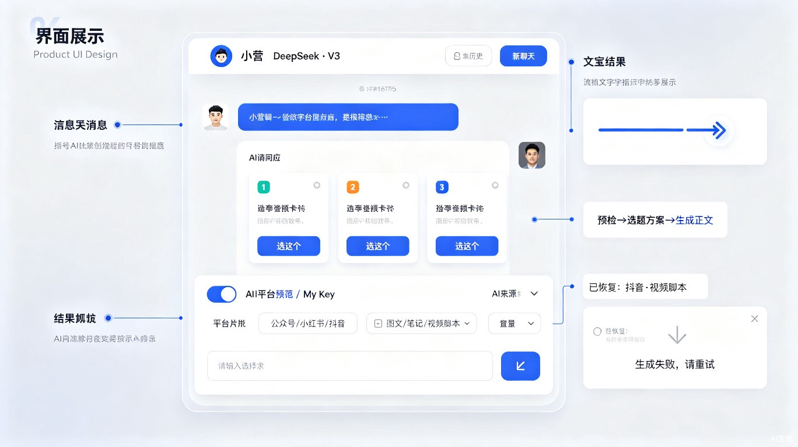
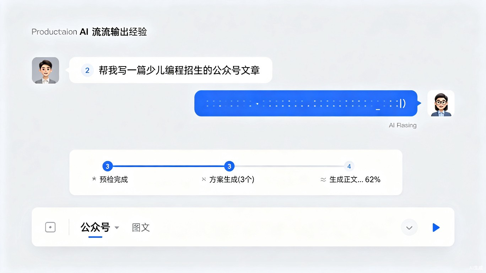

营销创作模块改进需求规格及UI设计
Create.vue 全链路 Bug 修复、逻辑优化与体验升级
问题总览与影响范围
通过对 apps/web/src/views/Create.vue、apps/api/app/services/prompt_builder.py、content_generation_service.py、agent/chat_service.py、agent/orchestrator.py、agent/preflight_service.py、agent/intent_parser.py、proposal_count.py 的全链路审读，共发现 3 个 P0 紧急 Bug、3 个 P1 重要缺陷、8 个 P2 体验/架构改进。
| ID | 优先级 | 类型 | 问题摘要 | 影响范围 | 文件 |
|---|---|---|---|---|---|
| BUG-01 | P0 | Bug | pushAgentChatResult 引用未定义变量 payload | Agent 路径生成正文时 100% 崩溃 | Create.vue:256 |
| BUG-02 | P0 | Bug | campaign_id 在 Agent/Workflow 路径丢失 | 活动关联数据全部丢失 | Create.vue |
| BUG-03 | P0 | Bug | scene 在 Workflow 路径始终为 undefined | 场景选择无效 | Create.vue |
| DEF-01 | P1 | 缺陷 | resolve_proposal_count 重复调用 | 性能浪费 + 数量校验不一致 | content_generation_service.py |
| DEF-02 | P1 | 缺陷 | 方案数不足时直接抛异常 | 用户遇到不必要的失败 | prompt_builder.py |
| DEF-03 | P1 | 缺陷 | 异常信息泄露内部详情 | 安全风险 | content_generation_service.py |
| UX-01 | P2 | 优化 | 无流式输出，等待无反馈 | 用户等待 10-30s 无进度 | Create.vue + 后端 |
| UX-02 | P2 | 优化 | 方案数量提示文案固定"3～5 个" | 认知不一致 | Create.vue:1025 |
| UX-03 | P2 | 优化 | 视频脚本 30 秒上限过短 | 营销视频内容过于压缩 | prompt_builder.py |
| UX-04 | P2 | 优化 | 切换会话不恢复平台/形态状态 | 误操作风险 | Create.vue |
| UX-05 | P2 | 优化 | 前后端预检阈值不一致 | 边界行为不一致 | 前端 + 后端 |
| ARCH-01 | P2 | 优化 | "7 层"注释与实际 9-12 层不符 | 理解成本 | prompt_builder.py |
| ARCH-02 | P2 | 优化 | industry_code 硬编码 marketing | 扩展性差 | Create.vue |
| ARCH-03 | P2 | 优化 | prompt_builder 与 ReAct 编排器职责重叠 | 维护成本 | prompt_builder.py + orchestrator.py |
当前创作流程（含 Bug 标注）
pushAgentChatResult 引用不存在的 payload.scene，导致 ReferenceError。BUG-02:
agentChat() 和 buildWorkflowInput() 均未传递 campaign_id。BUG-03:
buildGeneratePayload() 未设置 scene，导致 Workflow 收到的 scene 为 undefined。
P0 紧急修复（1-2 天）
BUG-01: pushAgentChatResult 引用未定义变量 payload
现象：当 Agent 路径返回 action === 'generate' 时，函数内部第 256 行引用 payload.scene，但 payload 不是该函数的参数，也不在闭包作用域内。这会导致 ReferenceError: payload is not defined，整个消息渲染崩溃。
位置：apps/web/src/views/Create.vue 第 224-268 行
当前代码（有 Bug）
function pushAgentChatResult(data, requestTopic) { if (data.action === 'generate' && data.content) { const c = data.content const usePlatform = c.platform || platform.value || 'wechat' messages.value.push({ // ... meta: { // ... scene: sceneLabel(payload.scene), // ← BUG: payload 未定义 model: `${c.llm_provider} · ${c.llm_model}`, }, }) } }
修复方案
function pushAgentChatResult(data, requestTopic) { if (data.action === 'generate' && data.content) { const c = data.content const usePlatform = c.platform || platform.value || 'wechat' messages.value.push({ // ... meta: { // ... scene: sceneLabel(c.scene || ''), // ← 修复：使用 c.scene model: `${c.llm_provider} · ${c.llm_model}`, }, }) } }
验收标准：Agent 路径选择方案后，正文正常渲染在聊天气泡中，meta 区域显示正确的场景标签。
BUG-02: campaign_id 在 Agent/Workflow 路径丢失
现象：buildGeneratePayload() 正确构建了 campaign_id，但 agentChat() 发送的 body 仅包含 message 和 llm_source，buildWorkflowInput() 同样未传递。只有 fallback 直接 API 路径才能关联活动。
修复方案 — agentChat 传递 campaign_id
async function agentChat(message, { selectedProposalIndex = null, retried = false } = {}) { const sessionId = await ensureAgentSession() const body = { message, llm_source: llmSource.value, } // ← 新增：传递 campaign_id if (campaignId.value) body.campaign_id = campaignId.value // ← 新增：传递当前平台和形态 body.platform = platform.value || 'wechat' body.content_format = contentFormat.value || defaultContentFormat(platform.value) if (selectedProposalIndex !== null) { body.selected_proposal_index = selectedProposalIndex } // ... }
修复方案 — buildWorkflowInput 传递 campaign_id 和 scene
function buildWorkflowInput(topic, proposalCount = null) { const payload = buildGeneratePayload(topic) const input = { platform: payload.platform, scene: payload.scene || 'brand_intro', // ← 修复 BUG-03 topic: payload.topic, content_format: payload.content_format, industry_code: 'marketing', llm_source: payload.llm_source, search_query: payload.topic, } // ← 新增：传递 campaign_id if (payload.campaign_id) input.campaign_id = payload.campaign_id if (proposalCount != null && proposalCount >= 1) { input.proposal_count = proposalCount } return input }
campaign_id，在生成内容时写入 Content.campaign_id 字段（该字段已在 Content 模型中存在）。
BUG-03: scene 在 Workflow 路径始终为 undefined
现象：buildGeneratePayload()（第 389-401 行）从未设置 scene 字段，导致 buildWorkflowInput() 中 scene: payload.scene 永远是 undefined。后端 workflow 默认使用 brand_intro，用户选择的场景不生效。
根因：当前 Create.vue 的 UI 中没有场景选择器，scene 依赖后端 preflight 意图解析。但 Workflow 路径绕过了 content API，scene 未被传递。
修复方案
function buildGeneratePayload(topic, selectedProposal = null) { const usePlatform = platform.value || 'wechat' const useFormat = contentFormat.value || defaultContentFormat(usePlatform) const payload = { platform: usePlatform, scene: currentScene.value || 'brand_intro', // ← 修复：新增 scene topic, content_format: useFormat, industry_code: 'marketing', llm_source: llmSource.value, selected_proposal: selectedProposal, } if (campaignId.value) payload.campaign_id = campaignId.value return payload }
currentScene 响应式变量。建议在 P2 阶段增加场景选择器 UI，当前 P0 修复使用 preflight 返回的 scene 或默认值。
P1 重要优化（3-5 天）
DEF-01: resolve_proposal_count 重复调用
现象：content_generation_service.py 第 95-98 行和第 115-118 行用完全相同参数调用了两次 resolve_proposal_count()，分别用于构建 user prompt 和解析返回结果。
修复：在 run_generate_proposals 函数开头解析一次，将结果存为局部变量 count，后续复用。
修复后核心逻辑
async def run_generate_proposals(db, tenant_id, body): content_format = validate_content_params(...) advisor_code = normalize_advisor_code(body.industry_code) require_active_assistant(db, advisor_code) assistant = get_profile(db, advisor_code) template = get_template(db, advisor_code, body.platform, body.scene) # ← 只解析一次 count = resolve_proposal_count( explicit=body.proposal_count, text=body.topic, ) system_prompt = build_proposals_system_prompt(assistant=assistant) user_prompt = build_proposals_user_prompt( platform=body.platform, scene=body.scene, topic=body.topic, content_format=content_format, scene_name=template.name if template else "", template_hint=template.prompt_hint if template else "", proposal_count=count, # ← 复用 ) # ... LLM 调用 ... raw_items = parse_proposals_json( result.content, proposal_count=count, # ← 复用 )
DEF-02: 方案数不足时直接抛异常
现象：parse_proposals_json 中，当用户指定 N 个方案但 LLM 只返回了 M < N 个时，直接抛出 PROPOSALS_PARSE_FAILED。用户看到的错误信息是"方案生成失败，请重试"，但实际已有部分可用方案。
修复方案
def parse_proposals_json(raw, *, proposal_count=None): text = _strip_json_fence(raw) max_items = proposal_count if proposal_count is not None else 5 data = _load_json_array(text) proposals = [] if data is not None: for item in data[:max_items]: # ... if not proposals: proposals = _extract_titles_fallback(text, max_items=max_items) # ← 修改：宽松模式，至少 1 个方案即可 if not proposals: raise ValueError("PROPOSALS_PARSE_FAILED") # 返回已有方案（可能少于请求数），由调用方决定是否提示 return proposals[:max_items]
run_generate_proposals 在返回结果时，若 len(proposals) < requested_count，在 assistant_message 中追加提示："原计划生成 N 个方案，实际生成 M 个。"
DEF-03: 异常信息泄露内部详情
现象：content_generation_service.py 多处直接将 Python 异常信息暴露给前端，如第 204 行 detail=f"生成失败: {e}"，可能包含 API Key、数据库连接串、堆栈等敏感信息。
修复方案
# 修改前 except Exception as e: logger.exception("LLM request failed") raise HTTPException(status_code=502, detail=f"生成失败: {e}") from e # 修改后 except Exception as e: logger.exception("LLM request failed") raise HTTPException( status_code=502, detail="生成失败，请稍后重试。如持续出现请检查 AI 模型配置。" ) from e
涉及修改点：content_generation_service.py 中所有 except Exception 分支（约 4 处）和 orchestrator.py 中 2 处。统一只记录日志、返回通用错误消息。
P2 体验增强（1-2 周）
UX-01: 流式输出与进度反馈
现状：整个生成流程（预检 → 方案 → 正文）为同步阻塞，用户仅看到"打字中"动画。长文生成可能 10-30 秒无任何进度反馈。
改进目标：分两阶段实施
- 阶段 A — 进度步骤指示器（3 天）：在消息区底部显示当前流程步骤（预检 → 选题方案 → 生成正文），每步完成后标记为已完成。
- 阶段 B — 正文流式输出（5 天）：正文生成阶段使用 SSE 流式输出，用户可实时看到文字逐字出现。
阶段 A：进度步骤指示器 UI
阶段 B：流式输出 UI
随着人工智能时代的到来，编程能力已成为未来人才的核心竞争力之一。对于 6-12 岁的孩子来说，正是培养逻辑思维的最佳时期
POST /api/content/generate/stream 端点，或在现有 agent/chat 路由中根据 Accept: text/event-stream 头切换流式响应。
UX-02: 方案数量提示动态化
现状：底部提示固定写死"先出 3～5 个方案 · 选定后再生成正文 · 服务号图文可自动发布"。
修复：根据预检返回的 proposal_count 或用户输入中的数量，动态更新提示文案。
修复方案
// 新增 computed const bottomHint = computed(() => { const countText = lastProposalCount.value ? `先出 ${lastProposalCount.value} 个方案` : '先出 3～5 个方案' return `${countText} · 选定后再生成正文 · 服务号图文可自动发布` }) // <template> 中 <div class="chat-footer__hint">{{ bottomHint }}</div>
UX-03: 视频脚本时长上限调整
现状：VIDEO_SCRIPT_MAX_SECONDS = 30，对营销视频来说过短。大多数营销短视频在 30-90 秒。
改进方案：
- 默认上限从 30 秒提升至 90 秒
- 新增
VIDEO_SCRIPT_MIN_SECONDS = 15和VIDEO_SCRIPT_MAX_SECONDS = 180常量 - 在 prompt_builder 中加入时长提示："全片总时长不超过 {max_seconds} 秒，建议 {min_seconds}-{max_seconds} 秒"
- 未来可考虑在 UI 上增加时长滑块，让用户自行调节
UX-04: 切换会话恢复平台/形态状态
现状：switchToSession 只恢复消息记录，不恢复 platform、contentFormat、campaignId。
改进方案：在 AgentSession 模型中增加 metadata_json 字段存储 UI 状态，切换时读取并恢复。
UI 设计 — 会话恢复提示
会话最后一条消息显示在下方，继续输入即可。
UX-05: 前后端预检阈值统一
现状：
- 前端
localPreflightCheck：text.trim().length < 6（总字符数） - 后端
_local_clarify：_effective_length(text) < 4（仅计算中文字符）
修复：统一为"有效汉字 < 4"规则。前端也使用 [\u4e00-\u9fff] 匹配计算有效长度，与后端完全一致。
// 前端修复 function localPreflightCheck(text) { const t = text.trim() const chineseChars = (t.match(/[\u4e00-\u9fff]/g) || []).length if (chineseChars < 4) { return '请补充更具体的创作需求，例如：主题、目标读者或想强调的核心要点。' } // ... 问候和模糊输入检查保持不变 }
ARCH-01: 修正"7 层"注释与文档
现状：build_layered_system_prompt 注释说"7 层分层结构"，实际组装 9-12 个 block（宪法、角色锁定、稳定人格、可选人格变体、核心任务、知识库指令、角色描述+硬性要求、可选视频脚本约束、零断点、内部保护、合规自检、extra_blocks）。
修复：将注释更新为"多层分层 system prompt"，并在文档中准确列出所有层及其顺序。不需要硬编码"7 层"的说法。
ARCH-02: industry_code 动态化
现状：buildGeneratePayload 和 buildWorkflowInput 硬编码 industry_code: 'marketing'。
修复：从 advisor.value 中读取，确保与当前选中的顾问一致。
function buildGeneratePayload(topic, selectedProposal = null) { // ... const payload = { industry_code: advisor.value?.code || 'marketing', // ← 动态读取 // ... } }
ARCH-03: prompt_builder 与 ReAct 编排器职责边界
现状：prompt_builder.py 的 7 层 system prompt 与 orchestrator.py 的 REACT_SYSTEM_PROMPT 都定义了角色、任务边界、知识库指令等，两处维护容易不同步。
改进方案：
- 短期：在
REACT_SYSTEM_PROMPT中明确标注"以下内容由 prompt_builder 生成，此处仅做 ReAct 编排补充"，并引用build_constitution_block()等函数 - 长期：将 ReAct 编排器的 system prompt 拆分为"基础层（复用 prompt_builder）+ 编排层（ReAct 专属）"，通过函数拼接而非字符串硬编码
API 变更
5.1 Agent Chat API 增加 campaign_id 传递
| 字段 | 类型 | 变更 | 说明 |
|---|---|---|---|
campaign_id | UUID | null | 新增 | 关联营销活动 ID，透传至内容生成 |
platform | string | 新增 | 当前 UI 选择的平台，用于意图解析上下文 |
content_format | string | 新增 | 当前 UI 选择的内容形态 |
5.2 Workflow API 增加 campaign_id 传递
| 字段 | 类型 | 变更 | 说明 |
|---|---|---|---|
campaign_id | UUID | null | 新增 | 关联营销活动 ID |
scene | string | 新增 | 场景代码（修复原 undefined 问题） |
5.3 正文流式输出端点（P2 阶段 B）
响应格式：text/event-stream
| event | data 格式 | 说明 |
|---|---|---|
token | {"text": "..."} | 正文文本片段 |
compliance | {"mark": "warn|block|null"} | 合规检测结果 |
done | ContentOut JSON | 完整内容对象（入库后） |
error | {"detail": "..."} | 错误信息（用户友好） |
数据库变更
本次改进不需要新建表，仅需对现有 agent_sessions 表做字段补充：
| 表 | 变更 | 类型 | 说明 |
|---|---|---|---|
agent_sessions |
新增列 ui_state_json |
JSONB / TEXT | 存储切换会话时需恢复的 UI 状态（platform, contentFormat, campaignId 等），P2 阶段实施 |
campaign_id 字段已在 Content 模型中存在，无需额外数据库变更。本次修复仅确保该字段在所有生成路径中被正确赋值。
UI 设计稿
7.1 优化后整体界面

7.2 流式输出与进度体验

7.3 进度步骤指示器 — 三种状态
7.4 用户友好错误提示
7.5 方案卡片优化
为您准备了 3 个创作方向，请选择后再生成正文：
angle 和 outline 字段（当前已有但前端未使用），用于展示更丰富的预览信息。
7.6 会话切换 — 状态恢复
上次对话内容已加载，继续输入即可。
实施路线图
| 阶段 | 工期 | 需求 ID | 涉及文件 | 负责人 |
|---|---|---|---|---|
| P0 紧急修复 | 1-2 天 | BUG-01, BUG-02, BUG-03 |
Create.vuechat_service.pyorchestrator.py
|
前端 + 后端 |
| P1 重要优化 | 3-5 天 | DEF-01, DEF-02, DEF-03 |
content_generation_service.pyprompt_builder.pyorchestrator.py
|
后端 |
| P2-A 进度指示器 | 3 天 | UX-01 (阶段 A) |
Create.vueworkflow_content_service.py
|
前端 + 后端 |
| P2-B 流式输出 | 5 天 | UX-01 (阶段 B) |
content.py (路由)content_generation_service.pyCreate.vue
|
前端 + 后端 |
| P2-C 体验优化 | 3-5 天 | UX-02, UX-03, UX-04, UX-05, ARCH-01~03 |
Create.vueprompt_builder.pypreflight_service.py新增 Alembic 迁移 |
前端 + 后端 |
验收检查清单
| 验收项 | 对应 ID | 验收标准 |
|---|---|---|
| Agent 路径生成正文不崩溃 | BUG-01 | 在 Agent 路径（非 Workflow）选择方案后，正文正常渲染，meta 区域显示正确的平台、形态、场景标签 |
| campaign_id 全路径传递 | BUG-02 | 通过 Agent、Workflow、直接 API 三条路径生成的内容，均能在 Content 表中看到正确的 campaign_id |
| scene 正确传递 | BUG-03 | Workflow 路径生成的内容，scene 字段不再为空 |
| 方案数不足不报错 | DEF-02 | LLM 返回 2 个方案但请求 3 个时，前端正常展示 2 个方案并提示"实际生成 2 个" |
| 异常信息不泄露 | DEF-03 | 断开网络后触发生成，前端只看到"生成失败，请稍后重试"，不出现任何堆栈或 API Key |
| 预检阈值一致 | UX-05 | 输入 3 个汉字，前端和后端均不拦截；输入 2 个汉字，前端和后端均提示补充 |
| 进度步骤指示器 | UX-01 | 发送消息后，底部出现步骤指示器，依次显示预检/方案/正文各阶段状态 |
| 会话切换恢复状态 | UX-04 | 在"抖音·视频脚本"会话中切换到"公众号·图文"会话，平台和形态选择器正确更新 |